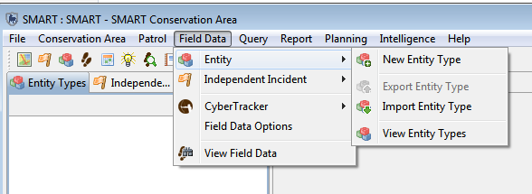
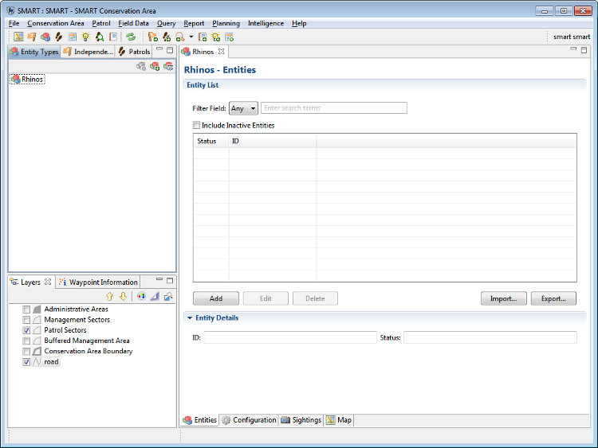
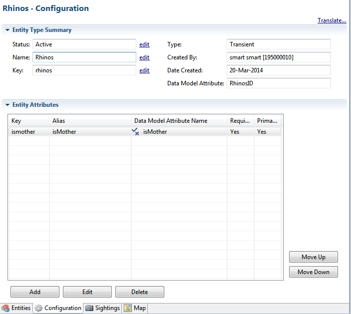
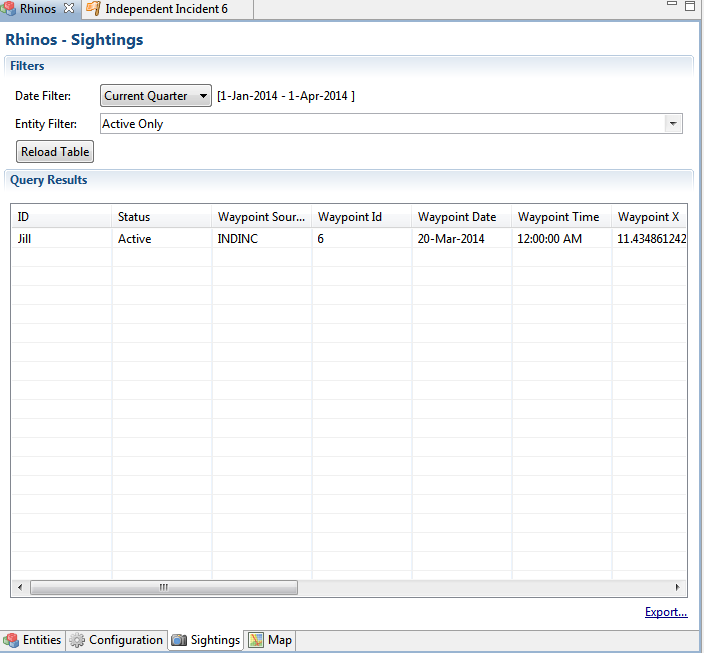
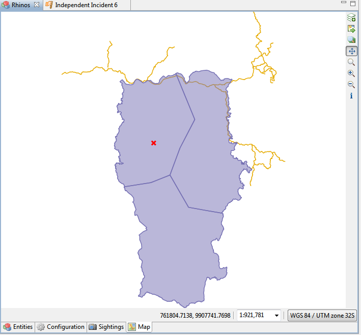

The Entity Tracker Plug-in can be be used within SMART to provide more detail and specifically track any specific "entities. Whether they are individual animals, people, places, things or anything else you can imagine, there can often be a benefit to using the entity tracker plug-in to track a specific list of these 'entities'.
The general process of using the plug-in is most easily described using a specific example to avoid the many vague and configurable terms necessary when talking about something as flexible as an entity. The most common example that was used in designing and building the entity tracking system was the example of tracking a specific population of Rhinos, where almost all the Rhinos are identified and have an ID or name, so we will use this example throughout this help file to provide an example of how the plug-in may be used. Please keep in mind you are free use the adaptability and features of the system however you feel it will most benefit your team.
Here is a very high-level overview of the steps to take when setting up the entity tracking plugin to track a population of Rhino, our example scenario. Details for each step will follow in the section after this overview:
1)Create a new Entity Type, Rhinos
2)Edit the "Rhinos" entity type and configure the entity type
3)Enter the list of current Rhinos and their attributes
4)Add the Rhinos' data model attribute into your data model in the most appropriate place.
Once these steps are complete you can successfully use this information to track you Rhinos and do various queries on specific Rhinos, Rhino attributes and other observations about the Rhinos as part of your analysis of this population and its change over time.

To create a new entity, from the "Field Data" menu, select "Entity" and then "New Entity Type" to start the process of creating a new entity.
Entity Type:
Transient - A transient entity type is anything that does not have a fixed position, such as animals, people, or other mobile resources.
Fixed - Anything with a fixed physical location such as a park gate, a fixed camera-trap or otherwise fixed objects, plants, etc.
Entity Name:
Simply a way to refer to this particular entity. examples: Rhinos, Gates, Cameras, Persons of Interest.
Key:
A unique key we can use to match this entity with an entity from another CA if they are the same, this is filled out for you and you do not need to change the default.
Attribute Name:
The name of the attribute that will be used in the data model.

This is where your list of existing entities is shown. You can also create new entity entries or edit existing ones on this page using the "Add" and "Edit" buttons.
You can use the Import/Export buttons to import and export lists of your entities. Your entity definition much match that of any entities that you are trying to import.
Entities Details
This section simply shows you the details of the particular entity you have highlighted in the list of entities above. Only attributes with the "isPrimary" option set show up in this details screen. You can use this feature to show only the most important or commonly referred to features if your entities have many attributes and you wish to organize them.
Configuration Tab

The "Entity Type Summary" Section is where you can edit the Name and Status of the entity types itself (ie Rhinos). This screen also shows how created the entity type and when.
The "Data Model Attribute" show the attribute name this entity type is linked to in the data model and this is where you can find it if you happen to forget what name it was given upon creation.
The "Entity Attributes" section is where you define the attributes you wish to store for this entity type. This is most typically done once upon initial creation of the type, and maybe a few attributes are then added over time as they occur, but it is a useful data organization tool to create all the attributes you may want to use at the start. These attributes should be things that do not change over time, such as birth date, eye color etc. Things like "age", size etc, that change over time should be put into the data model, so that the current state can be observed and tracked each time the entity is observed.
One can use existing data model attributes or create new ones. Often creating new one is necessary as many of the default data model attributes are things that change over time, but individual judgement must be used to best organize you data.
You can select the Data Model Attribute for your current entity type from the list of current data model attributes if you would like to make an attribute that references the entity type, such as creating an attribute of "Mother" and selecting the RhinoID" in our Rhino sample to have an attribute that allows you select from your list of Rhinos to specify an animal's mother.
Use the "Edit" and "Delete" button to manage your list of attributes. You can also use the "Move Up" and "Move Down" buttons to order your attributes how you prefer them.
Sightings Tab

The Sighting tab is a quick query tool allowing you to find the last known sighting of a particular entity, all the sighting of a single or group of entities and a few other common queries.
Date Filter - Allows you to specify what date rage or type you are looking for
Entity Filter - Allows you to search all entities, only active entities or a specific list of them.
Reload Table - This button will run the query and update the table to you current query parameters.
Query Results - All the observations of entities that meet your query filters are show in the table once you press the "Reload Table" button.
Export... - Allows you to export the list of observations in the table to a CSV or shape file.
Map Tab

The Map tab allows users to view the results of the Sightings Query from the sightings tab, as well as view fixed entities themselves.
The plug-in is designed to allow any number of Entity types, so one may go through the process of creating another entity type over and over to create many entity types that will all work at once without any problems. Each entity type attribute must be added to the data model to allow you to enter observations about each entity type of course.
When view entities simply highlight the item in the left list and press the delete icon (with the red X) to remove an entire entity type.
If you have collected data on the entities in the entity type the system will give you various messages saying that you cannot delete the entity type until you delete all of the associated data, so you may have to edit and delete many patrols or other data observations to successfully delete the entity type. Of course, we do not recommend you delete anything that contains actual data observations. If you no longer want to use the entity tracking you can simple remove the entities attribute from the data model and leave the historical observations alone.
Often it will make sense to create a single master list of entities and distribute it to multiple field sites. This can be done easily using the export and import options in the entity tracking plug-in.
There are 2 types of files that can be exported and imported:
To export an Entity Type:
To import an Entity Type:
To export an Entity List:
To import an Entity List:
The Entity Query User Interfaces are very much the same as all other Query types for the various result types, see the Query Help pages, in the table of contents under: "Components of Smart -> Query Perspective" for details on the general use and building of queries.
To Query Entity specific properties, one would use the additional Query Filters under "Entity Type Filters" in the standard filter window, these filters are only when selecting an "Entity Query".

To Create the query shown above which basically asks the question, "List all Rhino sightings for children of the Rhino named Jill" You would do the following:
Using this same method and all the same query options and features as regular SMART queries, you can create complex and powerful queries, summaries and maps with entity-specific attributes in your query filters.